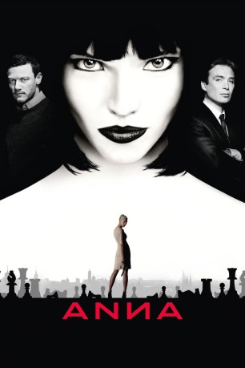
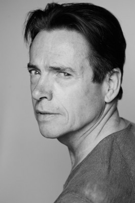

#11707 Anna
 gesehen am 14.09.2019
gesehen am 14.09.2019
 
 IMDB-Wertung: 6.6 / 10
IMDB-Wertung: 6.6 / 10  Tomatometer: 36
Tomatometer: 36  Metascore: 40
Metascore: 40 
Hinter Anna Poliatovas beeindruckender Schönheit liegt ein brutales Geheimnis. Neben ihrer Arbeit als angesagtes Model in Paris arbeitet die junge Russin aufgrund ihrer unbändigen Kraft und Geschicklichkeit als Elite-Attentäterin für den KGB und zählt zu der gefürchtetsten Killerin im Auftrag der russischen Regierung. Doch schon bald nimmt die CIA Anna ins Visier und sie verstrickt sich immer mehr in ein Netz aus Lügen und Intrigen bis ein Ausweg in weite Ferne rückt.
Jahr: 2019
Dauer: 119 Minuten
FSK: 16
Land: Frankreich Studio: StudioCanalTonspuren: DD5.1 - ,
Untertitel: Deutsch,
Auflösung: 1080p (1920x808) Größe: 8161 MB
Genre: Action, Thriller
Regisseur:  Luc Besson
Luc Besson
Drehbuch: Luc Besson
Soundtrack: Éric Serra
Darsteller:
- Sasha Luss als Anna
 Helen Mirren als Olga
Helen Mirren als Olga Luke Evans als Alex Tchenkov
Luke Evans als Alex Tchenkov Cillian Murphy als Lenny Miller
Cillian Murphy als Lenny Miller- Lera Abova als Maude
 Alexander Petrov als Piotr
Alexander Petrov als Piotr- Nikita Pavlenko als Vlad
- Anna Krippa als Nika
 Eric Godon als Vassiliev
Eric Godon als Vassiliev Ivan Franek als Mossan
Ivan Franek als Mossan- Adrian Can als John
 Andrew Howard als Oleg
Andrew Howard als Oleg Jan Oliver Schroeder als Frederick
Jan Oliver Schroeder als Frederick- Mikhail Safronov als Anna's Father
- Sergey Bachurskiy als Moscow Cabbie
- Ernest Gromov als KGB Superior Officer
- Julia Munrow als Vassiliev's Secretary
 Jess Liaudin als Olga's Technicien
Jess Liaudin als Olga's Technicien- Christopher Craig als Piotr's Hostage
- David Coburn als CIA Chief
- James Joint als Miller's Chauffeur
- Réginal Kudiwu als Blake
- Manuel Sinor als Binome Blake
- Pauline Hoarau als Nato's Model 1
- Cansu Tosun als Car Crash Woman
 Niccolò Senni als Laboratory Scientist
Niccolò Senni als Laboratory Scientist- Elise Lissague als One Agency Receptionist
- Wendy Grenier als One Agency Assistant
 Alain Figlarz als Restaurant Target
Alain Figlarz als Restaurant Target Igor Savochkin als Alex's Sidekick
Igor Savochkin als Alex's Sidekick Colin Bates als CIA Agent (uncredited)
Colin Bates als CIA Agent (uncredited)- Victoria Cyr als CIA Agent (uncredited)
- François Girard als Cascadeur (uncredited)
- Maxence Huet als Russian Guard (uncredited)
- Tyneille Louise als CIA Agent (uncredited)
- Emmanuel Ménard als Diplomat (uncredited)
- Genevieve O'Neal als CIA Agent (uncredited)
- William Sciortino als KGB Agent (uncredited)
- Avant Strangel als CIA Agent (uncredited)
- Christophe Tek als The Stylist (uncredited)
-  Rupert Wynne-James als Man in Car / Man in Shower (uncredited)
- Aleksey Maslodudov als Jimmy
- Jean-Baptiste Puech als Samy
- Alison Wheeler als Dorothée
- Louise Parker als Sonia
- Sasha Beliaeva als Petra
- Greta Varlese als Renata
- Lauren de Graaf als Inge
- Maria Luss als Anna's Mother
- Sergey Zharkov als KGB Sentry
Datei: X:\2019(A-F)\Anna (2019, FSK16, 1920x808).mkv seit 14.09.2019
Festplatte: HD 2018(G-Z)-2019(A-Z)
 Es gibt insgesamt 60 Filme in der Gruppe '2019(A-F)'
Es gibt insgesamt 60 Filme in der Gruppe '2019(A-F)'